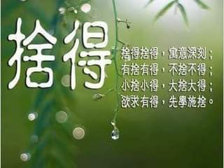
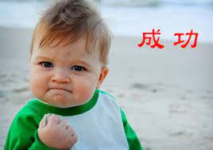

|
|||||
|
|||||
| 人生 | 1、不放棄，不氣餒，哪怕生長在烏黑寂靜的山嶺，我們也要倔強地開出屬於自己的美麗。 2、當命運毫不留情給我們致命一擊時，我們要做的不是倒下，不是哭泣， 而是勇敢地折斷它的刺入的刀，然後反擊，展現出我們人類生命的魄力。 3、人生為棋，我願為卒，雖然緩慢，可是誰見我後退半步？ 4、當我們處於人生的高峰居高臨下，盡情沐浴在光芒中，固然可喜。 可是當夜幕降臨時，我們能否看到夜空中的顆顆璀璨呢？ 5、這個世界上並不是所有事物都是我們可以掌控的。 失落時，想想流水，輕輕地告訴自己，一切都如這流水，都會過去的， 自己所做的只是調整好心態，默默地等待。 6、學會放下，學會忘記，人生只有一次，何必事事上心，為什麼要讓自己活在悲傷中而不釋懷？ 讓自己活得開心點不是一個更好的選擇嗎？ 7、生命的重點不是擁有，而是存在。 你可以用錢能買到的所有東西把自己團團圍住，但你依然會是最可悲的人。 「如果我有……就會很快樂」症候群是個大騙局， 如果你只在物質事物上尋找快樂，那麼東西再多也不夠。 不要把注意力全部放在物質上，要看看生命的所有層面，向內觀看。 8、心情不好時，就要經常問自己，你有什麼而不是沒有什麼。 如果你覺得不爽，你就抬眼望窗外， 世界很大，機會很多，人生很短，不要蜷縮在一小塊陰影里。 如果你的生活已處於低谷，就大膽走，因為你怎樣走都是在向上。 9、要比就和自己比，讓自己不斷成熟和進步，取得自己的天地。 活在別人眼中，永遠是別人眼光的附庸， 活自己的人生，做自己的主人。 10、生命中，總有些人，安然而來，靜靜守候，不離不棄； 也有些人，濃烈如酒，瘋狂似醉，卻是醒來無處覓，來去都如風，夢過無痕。 緣深緣淺，如此這般： 無數的相遇，無數的別離，傷感良多，或許不舍，或許期待，或許無奈， 終得悟，不如守拙以清心，淡然而淺笑。 看花開花落、雲捲雲舒、緣來緣去。 Top! |
||||
| 快樂的秘訣 | 1. Be grateful. 要學會感恩。 2. Choose your friends wisely.明智的選擇自己的朋友。 3. Cultivate compassion.培養同情心。 4. Keep learning.不斷學習。 5. Become a problem solver.學會解決問題。 6. Do what you love.做你想做的事情。 7. Live in the present.活在當下。 8. Laugh often.要經常笑。 9. Practice forgiveness.學會原諒。 10. Say thanks often.要經常說謝謝。 11. Create deeper connections.學會深交。 12. Keep your agreement.守承諾。 13. Meditate.冥想。 14. Focus on what you’re doing.關注你在做的事情。 15. Be optimistic.要樂觀。 16. Love unconditionally.無條件的愛。 17. Don’t give up.不要放棄。 18. Do your best and then let go.做最好的自己，然後放手。 19. Take care of yourself.好好照顧自己。 20. Give back.學會給予。 Top! |
||||
| 貴人 | 在人生中歷經磨難時給予你無私幫助和指點迷津的人，都是你生命中貴人， 對你付出了獨特的誠摯、善良、愛護、關懷、憐惜、支持、保護。 在茫然的歲月裡自顧不暇無心感恩我們生命中的貴人，甚至有時間抱怨時運不濟或者遇人不淑， 卻疏於讓自己從忙碌中沈靜下來，用感恩的心情反省。 如果有能力能當別人的貴人，而不是等待貴人出現的人。 九十六年蔡依林獲得金曲獎最佳國語女歌手獎， 當時她領獎時說：「要謝謝曾經很不看好我的人，謝謝你們給我很大的打擊，讓我一直很努力。」 她現在擁有的成功，都是憑著一股好強的毅力，以及不想讓人失望的心，用時間與汗水累積而來的。 人生充滿著許多的因緣和際遇，每一個因緣的抉擇都可能將自己推向另一個高峰， 不要輕忽任何創造可能的機會，或是疏忽可以助人的機會， 學習真誠待人，把每一件事都做到完善，對每一個機會都充滿感激， 相信我們就是自己生命中最重要的貴人。性格決定一生，態度決定一切， 不要躲在自己的世界，幻想著貴人出現， 機會是留給準備好的人，當天將降大任於斯人也，你也相對準備好了嗎？ 人生中的七個貴人 欺騙我的人，增長了我的見識 絆倒我的人，強化了我的能力 中傷我的人，砥礪了我的人格 藐視我的人，覺醒了我的自尊 斥責我的人，助長了我的智慧 遺棄我的人，教導了我的獨立 傷害我的人，磨練了我的心志 Top! |
||||
| 餃子 | 最近包餃子，煮餃子，自己再吃一口餃子， 突然發覺一個很貼切的比喻，人這一輩子如同餃子一樣。不是嗎？ 時間如同餃子皮，不同的麵粉能擀出不同的餃子皮，一樣的光陰，一樣的日出和日落， 不同的心態決定了你今天的天氣是晴朗還是陰霾密布？ 活在當下才是積極正能量的，昨天已逝，後悔無用！明天未知，擔憂無益！ 把握當下，努力過好現在，才是我們可以做到的。 人生不同的經歷就是不同的餃子餡，酸甜苦辣都是味道，人這一輩子什麼滋味沒嘗過？ 又有什麼滋味是人受不了的呢？對於未來的信心和堅持到底的決心， 如同餃子皮上的褶皺，包得住才能吃到完整的餃子，經歷過才知滋味。 餃子要下水滾三次才能熟，人又何嘗不是如此？無論你是被別人拖下水、扔下水，還是自己跳下水的， 人這一生中不蹚一次渾水又怎麼會成熟？ 哪顆餃子不被狠狠捏才能褶皺實緊，餡不散落？哪顆餃子不是被人咬食？人又何嘗不是如此？ 人這一生中難免不被別人狠狠捏一下，難免不被開水燙一下， 難免不被水煮一下，更難免不被人咬一下。所以，沒有什麼可以抱怨的！ 如果沒有餃子那樣的一番經歷，又怎會成熟？ 不管哪種經歷，都是在積累財富！不管哪種人生，都是如同餃子一般，讓人果腹、供人營養！ Top! |
||||
| 別浪費了 | 今天的你，是不開心的你，因為有人在言語間刺傷了你。 你不喜歡吵架，所以你離開； 可是你只是離開了那，卻沒有離開被那人傷害的情境，因此你愈想愈生氣。 愈有氣，你就愈沒有力氣去理會別的事情，許多更該用心去做去想去處理的事件， 就在你漫天漫地的心煩意亂之中，被輕忽被漠視被省略了。因為， 你只是一心一意地在生氣。 在情緒上做文章，這是對自己的浪費，而且是很壞的浪費。 畢竟，生氣也是要花力氣的，而且生氣一定傷元氣。 所以，聰明的你，別讓情緒控制了你，當你又要生氣之前，不妨輕聲地提醒自己一句：「別浪費了。」 Top! |
||||
| 正能量 | 1.不要過分在乎身邊的人，也不要刻意去在意他人的事 在這世上，總有人讓你悲傷、嫉妒、咬牙切齒。 但其實你都知道並不是他們有多可惡，只是因為你太在乎。 所以想心安，首先就要不在乎，學會不在乎，就不會常常感到心煩意亂。 你對他人不在乎，他就不會讓你生氣。一旦在乎，你就已經輸了。 所以懂得放下的人，才能活得快樂又長壽。 2.活得糊塗，容易幸福;活得清醒，容易煩惱 因為清醒的人事事看得太真切，只要計較了、認真了，生活中便煩惱遍地; 而糊塗的人，因不善計較，雖然有時活得較簡單粗糙，不過卻反而尋覓到快樂人生的真理。 3.欲成大器，先要大氣 大氣之人，語氣不驚不懼，性格不驕不躁，氣勢不張不揚，舉止不猥不瑣。 靜得優雅，動得從容，人生過得灑灑脫脫。 大氣的人，能安安心心做好本分的角色， 認認真真幹好手頭的事情， 不為名利而爭鬥，不為錢財而糾結。 大氣之人，能讓自己的世界海闊天空，即便一時失意，終得大器晚成。 4.愛人是路，朋友是樹 人生只有一條路，一條路上多棵樹，有錢的時候別迷路，缺錢的時候靠靠樹， 幸福的時候莫忘路，休息的時候澆澆樹。 有時候越是簡單的道理，我們越常遺忘！ 以上寓意很深的四句話，不知道大家看了有沒有什麼感觸呢？ Top! |
||||
| 捨與得 | 捨得，是一種心境的選擇更是一種人生智慧的展現。 有捨有得，不捨不得，小捨小得，大捨大得， 在捨得中見智慧，於捨得後感悟人生 在「捨」與「得」之間，自古就滲透著人世間古老智慧： 當你緊握雙手，裡面什麼也沒有；當你打開雙手，世界就在你手中。 很多時候我們都應該懂得捨得， 生活中魚和熊掌能兼得的時候很少， 所以真正的智慧在於捨得，在為人處世中要做到捨得並不難， 關鍵是如何做到「該捨時捨，不該捨時不捨」， 把握好這樣的態度 ，你也就學會了為人處世的學問，掌握了打開人生成功之門的鑰匙。 美好的一天，從捨是因得是果，財散人聚，一捨便得。 開始~~ “得”是一種本事，“捨”是一門學問。沒有能力的人得不到，沒有悟性的人捨不得。 捨得金錢，才能贏得自己，主宰生活；捨得功名，才能靜下心來，順其自然品味人生。 痛苦是因為捨不得，幸福是因為捨得；憂鬱是因為捨不得，快樂是因為捨得。 捨得之妙，妙在微言大義；捨得之精，精在有捨有得。 因和果互相關聯，捨與得也是互動的…… 所以做人不要把煩惱、愁悶傳染給他人，因為捨什麼就得什麼，這是必然的因果。 捨，看起來是給人，實際上卻是給自己。 星雲大師 人生之道，貴在捨得。 得，並不是非要 我們事事精通，無所不能；捨，也並不是要我們去憤世嫉俗，遠離紅塵。 做一個拿得起放得下的人，追求自己想要的生活，不要被一些我們所並不需要的世俗的累贅所牽絆， 唯有做到這一點，我們才能成為一個快樂而充滿魅力的人，也才能擁有一個幸福而成功的人生。 本書將從為人處事的不同角度，為讀者提供一種健康、智慧的人生心態， 一種處事的哲學態度， 從而讓讀者能夠以一種清楚的眼界確定自己的準則，調整自己的生活秩序，永遠保持一種動中的平衡， 以更好的享受生活、享受這份幸福人生的生命感悟。 Top!  |
||||
| 成功秘訣 | 渤海口有一隻小魚，他下定決心要一路游到山頂於是他逆向而行， 這隻小魚泳技精湛，一會兒衝過淺灘，一會兒劃過激流穿過了層層漁網， 躲過水鳥的追蹤， 好不容易他游到了山頂，可他還來不及喘口氣呢，剎那間，被凍成了冰。 一萬年後，一群登山隊員在山頂上的冰封中發現了他，立刻有人認出了這是產於渤海口的魚。 一位年輕人讚道：「真是一隻勇敢的魚啊！穿越千川萬水來到一個截然不同的環境，了不起」 一位老者卻說：「不！他只有偉大的精神，卻沒有偉大的方向，所以只換來死亡」 成功，除了「努力」以外，更需要「方向」 很多人會選擇不斷地換跑道、換環境、換工作或是拼命地勞碌奔波，有時不妨暫時放慢腳步， 想一想：這條路真的是我「想」走的嗎？真的是我「該」走的嗎？ 真的是我「適合」走的嗎？ 如果走錯，甚至走反了方向，不但到不了目的地，反而會離您的理想與抱負越來越遠，甚至一敗塗地。 就如本的魚一般，有偉大的精神卻走錯了方向，最終換來死亡。 人生的路很長，不要急於奔走，應當靜下心來思考，確認方向後才往前出發，並在前行的路途中， 不斷的修正方向，才能向正確的成功之路邁進。 Top!  |